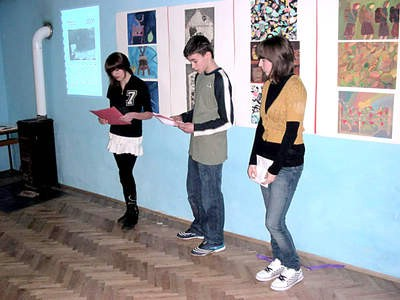

 Šušnjevica - Učenici čepićke OŠ Ivana Gorana Kovačića okupljeni u skupini izvannastavnih aktivnosti Mladi Rumunji, pod vodstvom Romine Licul, predstavili su prekjučer svoj "Calindaru rumarilor," kalendar na istrorumunjskom jeziku.
Svečanosti u zgradi područne škole bili su prisutni učenici, djelatnici škole i mještani te kao gosti zvončari iz Žejana, Kristina Cvetković - apsolventica Filozofskog fakulteta u Splitu, Lidija Nikičević - ravnateljica Etnografskog muzeja Istre u Pazinu, Goran Filipi s pulskog sveučilišta - autor "Istrorumunjskog lingvističkog atlasa," i Ervino Curtis - predsjednik tršćanskog društva talijansko-istrorumunjskog prijateljstva Decebal.
Kalendar s nazivima mjeseci i blagdana na istrorumunjskom plod je nastojanja škole da jezik sačuvan još jedino u starijoj seoskoj populaciji ucijepi u mlade naraštaje i tako ga spasi od izumiranja. Ta se zalaganja uklapaju u napore Općine Kršan i države koja je istrorumunjski proglasila nacionalnim dobrom, ali i svjetski pokret za očuvanje malih jezika koji gotovo svakodnevno nestaju uslijed globalizacijskih procesa.
- Godinama nastojimo unaprijediti odgojno-obrazovni rad novim metodama vođenim vizijom škole u kojoj su zadovoljni svi: učenici, nastavnici i roditelji. Zato nam je potrebno društvo koje je senzibilizirano za potrebe djece. Naša želja je dio škole pretvoriti u edukativni centar u kojem će biti pohranjene sve vrednote vezane uz istrorumunjski jezik, kazala je direktorica Mirela Vidak.
Načelnik Josip Kontuš izjavio je da Općina ima u planu tu ideju ostvariti do kraja 2010. godine.
- Renovirali smo prostor u središtu sela u svrhu informativnog punkta i trenutno ga opremamo. Sljedeći korak bit će dodatna obnova školske zgrade tako da će se na katu nalaziti učionice, a u prizemlju mali muzej, kazao je on.
Cvetković je održala predavanje o istrorumunjskom mikrojeziku u globalnom selu u kojem je ustvrdila da izrada gramatike i rječnika, čemu su također prilog dali ovdašnji osnovnoškolci, nisu dovoljni za očuvanje jezika, nego uz to valja raditi na osvješćivanju izvornih govornika i stvaranju ekonomskih uvjeta koji će spriječiti iseljavanje iz govornih žarišta.
- Je li prekasno za spas ovoga jezika? Još nema pravog odgovora, ali svaka odluka koja se donosi sada je presudna, poručila je.
Curtis je naglasio da sva ova nastojanja mogu imati i svoju ekonomsku dimenziju. Naime, organiziravši izlet iz Trsta na Učku s obilaskom Žejana i Šušnjevice doživio je pozitivna iskustva te stoga namjerava organizirati nove, što bi moglo dati zamaha turističkom razvoju istrorumunjskog područja.
Žejanci, koji govore sjevernom verzijom ovog jezika, predstavili su se nastupom zvončara, a domaćine je pozdravio predsjednik Mjesnog odbora Boris Marmilić. U uvodnom dijelu nastupili su i članovi KUD-a "Ivan Fonović Zlatela," a istrorumunjska riječ čula se u učeničkim recitacijama.
R. Selan
January 31, 2009
© 2009 Glas Istre